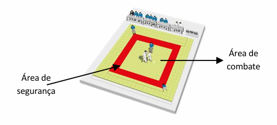

Materiais necessários
Vestuário (judogi). Composto por:
Solo
➢ Fornecido pelos locais de prática;
➢ Revestido por "tatami”, um material macio e de borracha;
➢ Divide-se em 2 zonas:a área de combate – zona interna (8mx8m) – e a área de segurança – zona externa (3 metros de largura).
